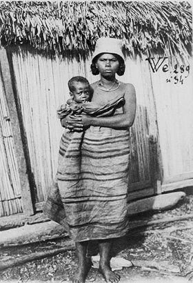

Tanala
Un article de Wikipédia, l'encyclopédie libre.
|
|
Cet article est une ébauche concernant Madagascar.
Vous pouvez partager vos connaissances en l’améliorant (comment ?) selon les recommandations des projets correspondants.
|
| Tanala | |
|  Femme Tanala (carte postale de 1908) |
|
| Populations | |
|---|---|
| Populations significatives par régions | |
| 800 000 | |
| Autre | |
| Langue(s) | dialecte du malgache |
| Religion(s) | religions traditionnelles |
| modifier |
|
{kind=link}
Les Tanala (ou Tañala) sont un peuple forestier du sud-est de Madagascar.
Certains Tanala ne firent jamais allégeance au Royaume de Madagascar.
Sommaire[masquer] |
Langue[modifier]
Ils parlent un dialecte du malgache.
Notes[modifier]
Voir aussi[modifier]
Articles connexes[modifier]
Bibliographie[modifier]
- (en) Ralph Linton, The Tanala, a hill tribe of Madagascar (Marshall Field expedition to Madagascar, 1926), Field museum of natural history , Chicago, 1933, 334 p.
- (fr) Charles Ardant Du Picq, « Une peuplade malgache, les Tanala de l'Ikongo », in Le Tour du monde, n ° 46-47, 1905, p. 541 à 564
- (fr) Philippe Beaujard, Princes et paysans : les Tanala de l'Ikongo : un espace social du sud-est de Madagascar, L'Harmattan, 1983, 670 p. (ISBN 9782858022724)
- (fr) Philippe Beaujard, « Des ancêtres aux esprits de la nature. Mythe, rituel et organisation politique chez les Tanala de l'Ikongo (Sud-Est de Madagascar) » in Asie du Sud-Est et monde insulindien, 1985, vol. 16, n° 1-4, p. 141-147
- (fr) Philippe Beaujard, Mythe et société à Madagascar (Tañala de l'Ikongo) : le chasseur d'oiseaux et la princesse du ciel, L'Harmattan, 1991, 511 p. (ISBN 2738410006)
- (fr) Philippe Beaujard, Islamisés et systèmes royaux dans le sud-est de Madagascar : les exemples Antemoro et Tañala, Université de Madagascar, Antanarivo, (tiré à part issu de Omaly sy anio, n° 33-36, 1991-1992, p. 235-286
- (fr) Philippe Beaujard, « Les rituels en riziculture chez les Tañala de l'Ikongo (sud-est de Madagascar) : rituels, mythes et organisation sociale », , in Sandra Evers et Marc Spindler (dir.), Cultures of Madagascar : ebb and flow of influences, International Institute for Asian Studies, Leyde, 1995, p. 249-280 (ISBN 9074917119)
- (fr) P. Gaudebout et L. Molet, « Coutumes et textes Tanala », in Mémoires de l'Institut scientifique de Madagascar, Série C., t. 4, 1957, p. 35-96
- (fr) Victor Raharijaona et Solo Rakotovololona, « Première reconnaissance archéologique dans le pays Tanala (Ifandiana-Ranofama) », in Taloha (Tananarive), n° 12, 1994, p. 159-169
- (fr) Bodo Ravololomanga, Être femme et mère à Madagascar : Tañala d'Ifanadiana, L'Harmattan, 1992, 237 p. (ISBN 9782738416988)
- (fr) Bodo Ravololomanga, « La dignité de la femme tañala », in Repenser "la femme malgache" : de nouvelles perspectives sur le genre à Madagascar, Institut de civilisations, Musée d'art et d'archéologie, Université d'Antananarivo, 2000, p. 99-108
- (fr) Le Tanala, la forêt et le tavy : Ranomafana-Ifanadiana, Musée d'art et d'archéologie, Université de Madagascar, Antanarivo, 1987, 210 p.